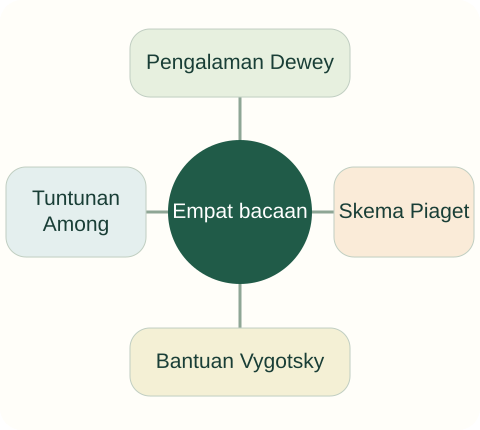

Tujuan pembelajaran
- Menjelaskan gagasan spesifik empat tokoh
- Menurunkan implikasi dari teori pada satu masalah
- Membedakan zona perkembangan proksimal dan scaffolding
Dewey dan penyelidikan melalui pengalaman
Dewey (1938/1997) menilai pengalaman dari interaksinya dengan kondisi anak serta kesinambungannya ke pengalaman berikutnya. Kegagalan jembatan menimbulkan masalah yang dapat diselidiki. Guru dapat bertanya apa yang menyebabkan balok jatuh, menyiapkan beberapa ukuran, dan mengajak anak mencoba lagi pada celah berbeda. Penyelidikan memberi arah pada pengalaman. Anak memperoleh kesempatan menghubungkan tindakan dengan akibat dan menggunakan temuan sebelumnya.
Piaget dan perubahan skema
Dalam pemikiran Piaget, skema ialah pola bertindak atau memahami yang dipakai untuk menghadapi situasi. Asimilasi terjadi ketika anak menangani situasi dengan pola yang sudah ia punya. Akomodasi terjadi ketika pola disesuaikan karena cara lama belum memadai. Jika anak sebelumnya menempatkan balok apa saja lalu mulai memilih balok yang melewati kedua tepi celah, guru memperoleh petunjuk tentang perubahan strategi. Pengamatan sederhana ini tidak menetapkan tahap perkembangan anak. Perhatikan apakah ia menggunakan strategi tersebut kembali.
Vygotsky dan bantuan dalam kegiatan bersama
Vygotsky (1978) memakai zona perkembangan proksimal untuk menjelaskan jarak antara kemampuan memecahkan masalah secara mandiri dan kemampuan dengan bimbingan orang dewasa atau kerja sama dengan teman yang lebih mampu. Wood, Bruner, dan Ross (1976) memperkenalkan scaffolding dalam pembahasan tentang bantuan tutor pada pemecahan masalah. Petunjuk yang membantu anak melakukan langkah yang semula sulit dapat dikurangi ketika anak mulai menguasainya. Untuk mengetahui apa yang berubah, amati tindakan mandiri awal, respons saat dibantu, dan tindakan setelah bantuan dikurangi.
Ki Hadjar Dewantara dan tuntunan
Dalam sistem Among, pendidik menuntun perkembangan dengan memberi ruang kemerdekaan yang disertai tanggung jawab. Guru dapat memberi teladan ketika diperlukan, membangun prakarsa ketika bekerja bersama anak, dan memberi dorongan saat anak mengambil langkah sendiri. Pada jembatan balok, tuntunan berarti menjaga ruang mencoba sambil menyediakan dukungan yang wajar. Dewey membantu menilai mutu pengalaman, Piaget membantu membaca perubahan strategi, Vygotsky mengarahkan perhatian pada bantuan sosial, dan Among memberi dasar etis bagi cara guru menuntun.
Diagram konsep

Apa yang perlu dilakukan guru ketika anak menghadapi kesulitan?

Anak mencoba menjembatani dua tumpukan dengan balok pendek. Guru dapat menyelesaikannya, memberi waktu anak menguji beberapa balok, atau memberi petunjuk agar anak membandingkan panjang balok dengan celah.
- Pada adegan mana anak meletakkan sendiri baloknya?
- Di mana guru memberikan petunjuk?
Pembahasan kasus
Mulailah dari tindakan anak. Saat ia belum menemukan hubungan panjang dan celah, guru dapat bertanya apakah ujung balok menyentuh kedua sisi. Jika petunjuk membantu, beri celah baru dan lihat apa yang dikerjakan tanpa petunjuk. Catatan ini berguna untuk menjelaskan bantuan dan perubahan strategi secara terpisah.
Buka contoh penalaran setelah mencoba
Jelaskan satu perbedaan antara analisis Piaget dan Vygotsky atas percobaan anak.
Analisis Piaget memeriksa perubahan strategi. Analisis Vygotsky membandingkan kemampuan mandiri dan kemampuan dengan dukungan.
Latihan terbimbing
Lengkapi tiga baris catatan: tindakan mandiri, tindakan setelah satu petunjuk, dan percobaan baru. Jelaskan bagian yang dapat dibaca melalui Vygotsky dan bagian yang dapat dibaca melalui Piaget.
Latihan mandiri
Bandingkan dua respons guru pada permainan susun bentuk. Gunakan dua tokoh dan tunjukkan bagaimana setiap gagasan menghasilkan alasan tindakan yang berbeda.
Lihat pembahasan
bagaimana anak menyelesaikan celah baru setelah petunjuk dikurangi
Percobaan baru membantu membedakan kemampuan saat didukung dari kemampuan yang mulai mandiri.
Refleksi calon pendidik
Pada titik mana bantuan saya mulai mengambil alih kegiatan anak?
Catatan hanya disimpan di peramban ini. Tidak dikirim kepada dosen.
Referensi dan bacaan pendamping
- Dewey, J. (1997). Experience and education. Touchstone. (Original work published 1938)Bacaan klasik tentang kualitas pengalaman pendidikan. Tahun kutipan dibedakan antara karya asli dan terbitan ulang.
- Fondation Jean Piaget. (n.d.). Les processus d’adaptation et d’organisation.Penjelasan konseptual pada yayasan pengelola karya Piaget; bukan penelitian baru atau dasar diagnosis tahapan anak.
- Vygotsky, L. S. (1978). Mind in society: The development of higher psychological processes (M. Cole, V. John-Steiner, S. Scribner, & E. Souberman, Eds.). Harvard University Press.Sumber klasik tentang mediasi sosial dan zona perkembangan proksimal. Bukan sumber istilah scaffolding.
- Wood, D., Bruner, J. S., & Ross, G. (1976). The role of tutoring in problem solving. Journal of Child Psychology and Psychiatry, 17(2), 89–100.Sumber primer konsep scaffolding; konteks tugas penelitian terbatas, bukan bukti semua bentuk bantuan selalu efektif.
- Direktorat Jenderal Kebudayaan. (2017). Mengenal sistem Among dalam konsep belajar Taman Siswa.Sumber resmi pengantar sejarah gagasan Among. Jangan memperlakukan ringkasan ini sebagai kutipan langsung edisi karya asli Ki Hadjar Dewantara.